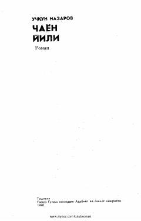

CYUrush yillaridagi og'ir sinovlar va insoniylik bardoshiga bag'ishlangan roman.
Ushbu roman Ulug' Vatan urushi yillaridagi front orti hayoti, mashaqqatlari va xalqning og'ir turmush sharoitlarini o'zida aks ettiradi. Oynisa, Qayumjon kabi obrazlar orqali insonlarning ulkan bardoshi va qiyinchiliklarga qarshi kurashi tasvirlangan.